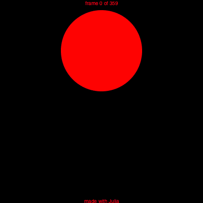
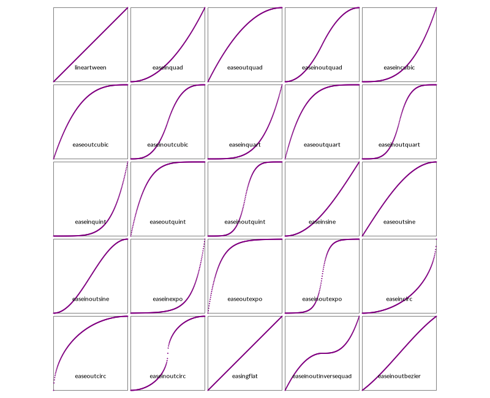
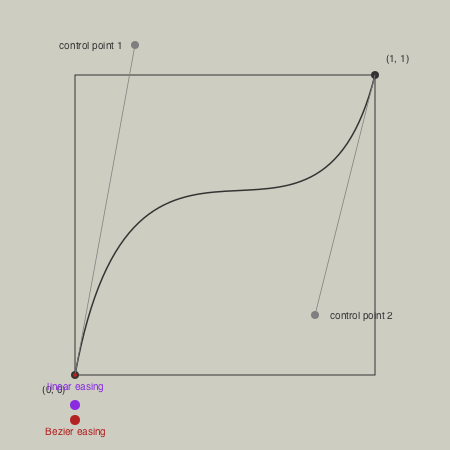

Animation helper functions
Javis.jl is the best way to make animated graphics with Julia.
Luxor provides some functions to help you create simple animations. It provides some assistance in creating lots of individual frames, and you have the option of stitching these together to form a moving animation, as an animated GIF or video file.
If you're looking for a way to display animations in another window, with live updates, see the Interactive graphics and Threads section.
There are four steps to creating an animation.
Use
Movieto create a Movie object which determines the title and dimensions.Define some functions that draw the graphics for specific frames.
Define one or more Scenes that call these functions for specific frames.
Call the
animate()function, passing in the movie and the scenes. This creates all the frames and saves them in a temporary directory.
You can also use the creategif = true option to make an animated GIF, or the createmovie = true option to make a video file.
Example
using Luxor, Colorsdemo = Movie(400, 400, "test")function backdrop(scene, framenumber) background("black")endfunction frame(scene, framenumber) sethue(Colors.HSV(framenumber, 1, 1)) eased_n = scene.easingfunction(framenumber, 0, 1, scene.framerange.stop) circle(polar(100, -π/2 - (eased_n * 2π)), 80, :fill) text(string("frame $framenumber of $(scene.framerange.stop)"), Point(O.x, O.y-190), halign=:center) text(scene.opts, boxbottomcenter(BoundingBox()), halign=:center, valign=:bottom)endanimate(demo, [ Scene(demo, backdrop, 0:359), Scene(demo, frame, 0:359, easingfunction=easeinoutcubic, optarg="made with Julia") ], creategif=true)
In this example, the movie uses two scenes, each specifying a function to draw frames from 0 to 359. For each frame numbered 0 to 359, the graphics are drawn by both the backdrop and frame functions, in that order. A drawing is automatically created (in PNG format) and centered (origin) so you can start drawing immediately. The finish function is automatically called when all the drawing functions in the scenes have completed, and the process starts afresh for the next frame. The second scene, calling the frame function, shows how you can pass optional information to the function.
Making the animation
You can request that animations are made automatically:
the
creategifkeyword when set totruemakes an animated GIFthe
createmoviekeyword when set totruemakes an animated video file
The pathname keyword argument lets you specify a pathname; if you don't provide one, it will be saved in a temporary folder (and listed in the REPL).
Many movie editing programs, such as Final Cut Pro, will also let you import sequences of still images into a movie timeline.
If you want to use a custom ffmpeg command, you can use load the FFMPEG module, and write code such as this:
using Luxor, FFMPEG...# store the frames in a temp directorytempdirectory = "/tmp/temp/"animate(movie, [ Scene(movie, frame, 1:50) ], tempdirectory=tempdirectory)# run a custom ffmpeg commandFFMPEG.exe(`-r 30 -f image2 -i $(tempdirectory)/%10d.png -c:v libx264 -r 30 -pix_fmt yuv420p -y /tmp/animation.mp4`)ffmpeg has literally hundreds of options, which include codec selection, framerate adjustment, and color palette tweaking.
Passing information to the frame() function
If you want to pass information to the frame function, such as an array of values, try these two approaches.
Either, call the enhanced frame() function with extra arguments with (s, f) -> frame(s, f, databuffer):
function frame(scene, framenumber, databuffer) eased_n = scene.easingfunction(framenumber - scene.framerange.start, 0, 1, scene.framerange.stop - scene.framerange.start) w = size(databuffer, 1) h = size(databuffer, 2) for c in 1:w, r in 1:h rs = rescale(r, 1, h, 0, 2π) cs = rescale(c, 1, h, 0, 2π) databuffer[r, c] = HSV(360((sin(2rs) * cos(2cs)) * sin(eased_n * 2π)), 0.7, 0.7) end placeimage(databuffer, Point(-w / 2, -h / 2))endfunction main() databuffer = zeros(ARGB32, 250, 250) demo = Movie(250, 250, "buffer") animate(demo, [ Scene(demo, (s, f) -> frame(s, f, databuffer), 0:100) ], tempdirectory="/tmp/tempdir", createmovie=true, pathname="/tmp/t.mkv")endOr, use the optarg keyword argument for Scene(), and access it using scene.opts keyword.
using Luxor, Colorsfunction frame(scene, framenumber) databuffer = scene.opts eased_n = scene.easingfunction(framenumber - scene.framerange.start, 0, 1, scene.framerange.stop - scene.framerange.start) w = size(databuffer, 1) h = size(databuffer, 2) for c in 1:w, r in 1:h rs = rescale(r, 1, h, 0, 2π) cs = rescale(c, 1, h, 0, 2π) databuffer[r, c] = HSV(360((sin(2rs) * cos(2cs)) * sin(eased_n * 2π)), 0.7, 0.7) end placeimage(databuffer, Point(-w / 2, -h / 2))endfunction main() databuffer = zeros(ARGB32, 250, 250) demo = Movie(250, 250, "buffer") animate(demo, [Scene(demo, frame, optarg=databuffer, 0:100)], tempdirectory="/tmp/tempdir", createmovie=true, pathname="/tmp/t.mp4")endAnimating paths
A useful function to help with animations is drawpath. This has a method that accepts a value between 0 and 1 that draws a portion of a Path object.
For example, the purple stroke is about half the length of the path.
fontsize(300)textpath("s", O, halign=:center, valign=:middle)s = storepath()drawpath(s, action=:stroke)sethue("purple")setline(10)setopacity(0.5)pt = drawpath(s, 0.5, action=:stroke) # return final ptsetcolor("red")circle(pt, 5, :fill)" fill-opacity="1"/>
<path fill="none" stroke-width="2" stroke-linecap="butt" stroke-linejoin="miter" stroke="rgb(0%25, 0%25, 0%25)" stroke-opacity="1" stroke-miterlimit="10" d="M 354.710938 49.773438 L 354.710938 75.273438 C 347.09375 71.367188 339.183594 68.441406 330.976562 66.492188 C 322.777344 64.535156 314.28125 63.554688 305.492188 63.554688 C 292.117188 63.554688 282.078125 65.609375 275.382812 69.710938 C 268.695312 73.804688 265.351562 79.957031 265.351562 88.164062 C 265.351562 94.414062 267.742188 99.320312 272.523438 102.882812 C 277.3125 106.445312 286.9375 109.835938 301.398438 113.054688 L 310.617188 115.117188 C 329.761719 119.210938 343.359375 125 351.414062 132.476562 C 359.476562 139.945312 363.507812 150.367188 363.507812 163.742188 C 363.507812 178.984375 357.476562 191.046875 345.414062 199.929688 C 333.351562 208.816406 316.773438 213.257812 295.679688 213.257812 C 286.886719 213.257812 277.730469 212.402344 268.210938 210.695312 C 258.6875 208.988281 248.65625 206.425781 238.117188 203.007812 L 238.117188 175.164062 C 248.074219 180.34375 257.886719 184.226562 267.554688 186.820312 C 277.21875 189.40625 286.792969 190.695312 296.273438 190.695312 C 308.960938 190.695312 318.71875 188.523438 325.554688 184.179688 C 332.398438 179.835938 335.820312 173.707031 335.820312 165.789062 C 335.820312 158.46875 333.351562 152.851562 328.414062 148.945312 C 323.484375 145.039062 312.671875 141.28125 295.976562 137.664062 L 286.601562 135.476562 C 269.902344 131.957031 257.839844 126.5625 250.414062 119.289062 C 242.996094 112.007812 239.289062 102.023438 239.289062 89.335938 C 239.289062 73.898438 244.757812 61.984375 255.695312 53.585938 C 266.632812 45.191406 282.15625 40.992188 302.273438 40.992188 C 312.230469 40.992188 321.605469 41.726562 330.398438 43.195312 C 339.1875 44.65625 347.292969 46.847656 354.710938 49.773438 Z M 378.148438 209.007812 "/>
<path fill="none" stroke-width="10" stroke-linecap="butt" stroke-linejoin="miter" stroke="rgb(50.196078%25, 0%25, 50.196078%25)" stroke-opacity="0.5" stroke-miterlimit="10" d="M 354.710938 49.773438 L 354.710938 75.273438 C 347.09375 71.367188 339.183594 68.441406 330.976562 66.492188 C 322.777344 64.535156 314.28125 63.554688 305.492188 63.554688 C 292.117188 63.554688 282.078125 65.609375 275.382812 69.710938 C 268.695312 73.804688 265.351562 79.957031 265.351562 88.164062 C 265.351562 94.414062 267.742188 99.320312 272.523438 102.882812 C 277.3125 106.445312 286.9375 109.835938 301.398438 113.054688 L 310.617188 115.117188 C 329.761719 119.210938 343.359375 125 351.414062 132.476562 C 359.476562 139.945312 363.507812 150.367188 363.507812 163.742188 C 363.507812 178.984375 357.476562 191.046875 345.414062 199.929688 C 333.351562 208.816406 316.773438 213.257812 295.679688 213.257812 C 286.886719 213.257812 277.730469 212.402344 268.210938 210.695312 C 258.6875 208.988281 248.65625 206.425781 238.117188 203.007812 L 238.117188 202.433594 "/>
<path fill-rule="nonzero" fill="rgb(100%25, 0%25, 0%25)" fill-opacity="1" d="M 243.117188 202.433594 C 243.117188 205.195312 240.878906 207.433594 238.117188 207.433594 C 235.355469 207.433594 233.117188 205.195312 233.117188 202.433594 C 233.117188 199.671875 235.355469 197.433594 238.117188 197.433594 C 240.878906 197.433594 243.117188 199.671875 243.117188 202.433594 Z M 243.117188 202.433594 "/>
</svg>)
It's also useful for animating text paths.

which uses code like this:
...f = # a value between 0 and 1textpath("Thank you for using", pt, halign=:center)tp = storepath()drawpath(tp, f, :stroke)...Easing functions
Transitions for animations often use non-constant and non-linear motions, and these are usually provided by easing functions. Luxor defines some of the basic easing functions and they're listed in the (unexported) array Luxor.easingfunctions. Each scene can have one easing function.
| List of easing functions |
|---|
| easingflat |
| lineartween |
| easeinquad |
| easeoutquad |
| easeinoutquad |
| easeincubic |
| easeoutcubic |
| easeinoutcubic |
| easeinquart |
| easeoutquart |
| easeinoutquart |
| easeinquint |
| easeoutquint |
| easeinoutquint |
| easeinsine |
| easeoutsine |
| easeinoutsine |
| easeinexpo |
| easeoutexpo |
| easeinoutexpo |
| easeincirc |
| easeoutcirc |
| easeinoutcirc |
| easeinoutinversequad |
| easeinoutbezier |
Most easing functions have names constructed like this:
ease[in|out|inout][expo|circ|quad|cubic|quart|quint]and there's an easingflat linear transition.
function draweasingfunction(f, pos, w, h) @layer begin translate(pos) setline(0.5) sethue("black") box(O, w, h, :stroke) sethue("purple") for i in 0:0.005:1.0 circle(Point(-w/2, h/2) + Point(w * i, -f(i, 0, h, 1)), 1, :fill) end sethue("black") text(replace(string(f), "Luxor." => ""), Point(0, h/2 - 20), halign=:center) endendt = Tiler(650, 650, 5, 5)margin=5fontsize(10)fontface("JuliaMono-Regular")for (pos, n) in t n > length(Luxor.easingfunctions) && continue draweasingfunction(Luxor.easingfunctions[n], pos, t.tilewidth-margin, t.tileheight-margin)endIn these graphs, the horizontal axis is time (between 0 and 1), and the vertical axis is the parameter value (between 0 and 1).

One way to use an easing function in a frame-making function is like this:
function moveobject(scene, framenumber) background("white") ... easedframenumber = scene.easingfunction(framenumber, 0, 1, scene.framerange.stop) ...This takes the current frame number, compares it with the end frame number of the scene, then adjusts it.
In the next example, the purple dot has sinusoidal easing motion, the green has cubic, and the red has quintic. They all traverse the drawing extent in the same time, but have different accelerations and decelerations.
fastandfurious = Movie(400, 100, "easingtests")backdrop(scene, framenumber) = background("black")function frame1(scene, framenumber) sethue("purple") eased_n = scene.easingfunction(framenumber, 0, 1, scene.framerange.stop) circle(Point(-180 + (360 * eased_n), -20), 10, :fill)endfunction frame2(scene, framenumber) sethue("green") eased_n = scene.easingfunction(framenumber, 0, 1, scene.framerange.stop) circle(Point(-180 + (360 * eased_n), 0), 10, :fill)endfunction frame3(scene, framenumber) sethue("red") eased_n = scene.easingfunction(framenumber, 0, 1, scene.framerange.stop) circle(Point(-180 + (360 * eased_n), 20), 10, :fill)endanimate(fastandfurious, [ Scene(fastandfurious, backdrop, 0:200), Scene(fastandfurious, frame1, 0:200, easingfunction=easeinsine), Scene(fastandfurious, frame2, 0:200, easingfunction=easeinoutcubic), Scene(fastandfurious, frame3, 0:200, easingfunction=easeinoutquint) ], creategif=true)Here's the definition of one of the easing functions:
function easeoutquad(t, b, c, d) t /= d return -c * t * (t - 2) + bendHere:
tis the current time (framenumber) of the transitionbis the beginning value of the propertycis the change between the beginning and destination value of the propertydis the total length of the transition
The easeinoutbezier function accepts two additional arguments, two normalized control points of a normalized Bezier curve from Point(0, 0) to Point(1, 1). You can use these to define the shape of a custom easing transition. The Bezier curve's y coordinate determines the acceleration. [?]
